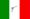
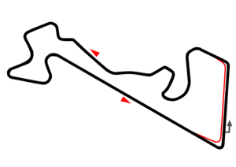
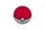

De: La Frikipedia, la enciclopedia extremadamente seria.
De: La Frikipedia, la enciclopedia extremadamente seria. De: La Frikipedia, la enciclopedia extremadamente seria.
| De la serie deportes para todos: | |||
| HubedobleTeCeCe | |||
|
| |||
| Número de practicantes | 27 y no es coña | ||
| ¿Deporte Olímpico? | Obvio que no | ||
| Campeonatos | Pilotos y escuderías | ||
| ¿Donde se practica? | 6 en Yurop y 2 en Asia, África y América | ||
| ¿Control anti-dopping? | No lo creo. | ||
| Riesgo de muerte | Para el piloto medio, pero para los autos altísima. | ||
| Árbitro | Los comisarios | ||
| Hinchas | Principalmente por los hostiazos | ||
El Campeonato Mundial de Turistas Turismos también como Güorl Turin' Ca ga r Champhyonchiph en ingla o WTCC abreviado, es un campeonato de autos (que obvio), que es la tercera competición con carácter mundial de las organizadas por la maFIA después de la Fórmula ano uno/Fórmula Hippies E y la HubedobleErreCe. Se trata de kamikazes (Ningun japo) que se estarán matando a pajas, para meterse las menores hostias y ganar la temporada. Cada participante consta de...
| Equipo | Nº | Piloto |
|---|---|---|
| |
1 | |
| 9 | | |
| 37 | | |
| |
2 |  Caaalvo! CAAAALVO! |
| 18 | | |
| |
3 | |
| 4 | | |
| |
5 | |
| |
7 | |
| |
10 | Gianno Mordedor |
| 77 | | |
| |
11 | |
| 12 | | |
| 14 | | |
| |
25 | |
| |
98 | |
| Trazado (El trazado rojo son los boxes) | Circuito | País | Fecha |
|---|---|---|---|
| |
Circuito de Marrkados | 13 de Arbol | |
| |
Circuito Polo Ricardo | 20 de Arbol | |
| |
Circuito de Phungas en el ring | 4 de Mayo | |
| |
Circuito que lo conoce Magoya | 11 de Mayo | |
| |
Circuito de Salzchicha | 25 de Maio | |
|  |
Mozkú Reizgüei | 8 de Juño | |
| |
El Spa de Fran | 22 de Juño | |
| |
Circuito de Aguas Termales de Corriente de Hagua Profunda | |
3 de Augustus |
| |
Zirz Punto Carrera-camino | 14 de Sepetimbre | |
| |
Shanghai | 12 de Octubre | |
 |
El 8 de los japos. | 
|
26 de Octubre |
| |
El Guía que te puede dar un hostiaso | 16 de Noveveveiembere |
| | |||
|---|---|---|---|
|
Deportes
Deportistas
Competiciones
Otros
Artes Marciales
|
Autor(es):